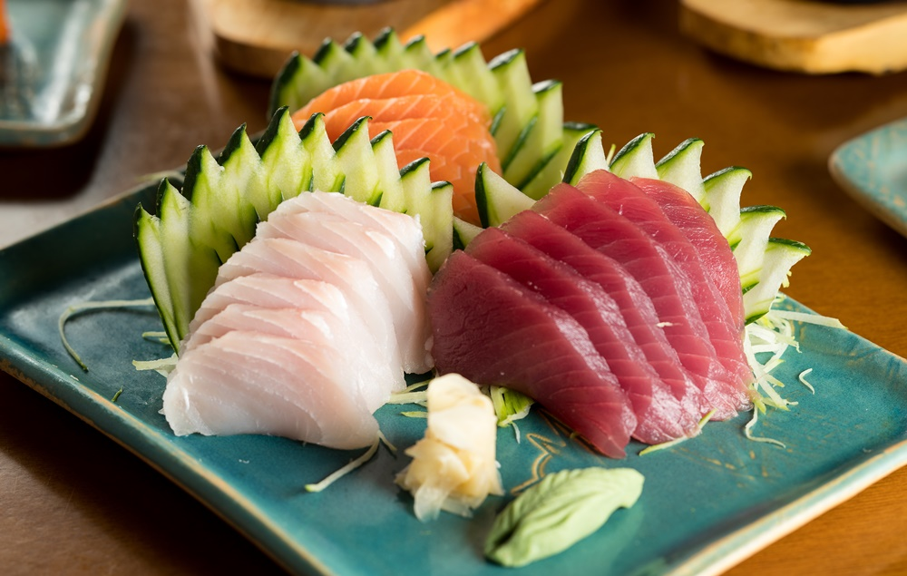

Receita Sashimi
Ingredientes
500 g de salmão fresco fatiado bem fininho
(utilize uma faca afiada e antes de fatiar, sempre esfregue
limão na lâmina para uma fatia não colar na outra)
1 colher de sopa de gengibre freco ralado
1 xícara (café) de shoyu
Modo de Preparo
PASSO 1: Fatie o salmão utilizando uma faca afiada e
a cada corte esfregue uma banda de limão na faca para não grudar o peixe.
PASSO 2: Rale o gengibre.
PASSO 3: Misture com o shoyu.
PASSO 4: Coloque a mistura num recipiente e deixe o peixe marinando por 15 minutos.
PASSO 5: Sirva de preferência acompanhado com arroz japonês (gohan).
